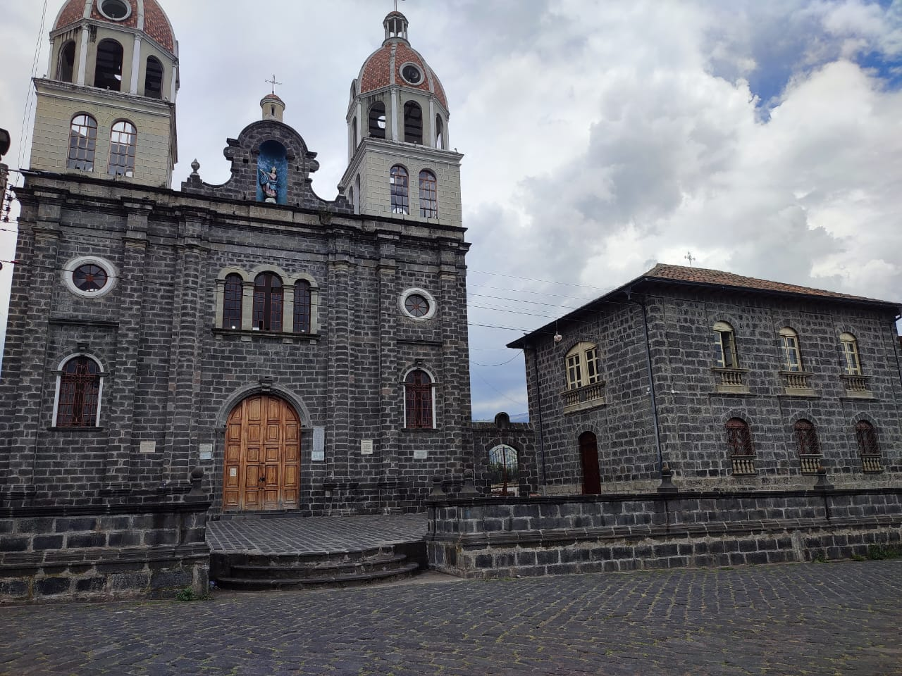

<div id="carrusel" class="carousel slide" data-bs-ride="carousel">

  <div class="carousel-indicators">
    <button type="button" data-bs-target="#carrusel" data-bs-slide-to="0" class="active color-black" aria-current="true" aria-label="Slide 1"></button>
    <button type="button" data-bs-target="#carrusel" data-bs-slide-to="1" aria-label="Slide 2"></button>
    <button type="button" data-bs-target="#carrusel" data-bs-slide-to="2" aria-label="Slide 3"></button>
    <button type="button" data-bs-target="#carrusel" data-bs-slide-to="3" aria-label="Slide 4"></button>
  </div>

  <div class="pb-4 mb-4 c-desc cssanimation hu__hu__">
    <h1 class="fw-bolder c-text">BINVENIDO A TU PRÓXIMA AVENTURA</h1>
    <h3 class="fw-normal fs-2">COMUNIDAD SAN RAFAEL DE CHIQUIPOGYO</h3>
    <p class="fw-normal fs-5">Senderismo - Trekking - Fotografía - Flora - Fauna - Lacteos</p>
  </div>

  <div class="carousel-inner">

    <div class="carousel-item text-center active" data-bs-interval="3000">
      
    </div>

    <div class="carousel-item text-center" data-bs-interval="3000">
      
    </div>

    <div class="carousel-item text-center" data-bs-interval="3000">
      
    </div>

    <div class="carousel-item text-center" data-bs-interval="3000">
      
    </div>

  </div>

  <button class="carousel-control-prev" type="button" data-bs-target="#carrusel" data-bs-slide="prev">
    <span class="carousel-control-prev-icon" aria-hidden="true"></span>
    <span class="visually-hidden">Anterior</span>
  </button>

  <button class="carousel-control-next" type="button" data-bs-target="#carrusel" data-bs-slide="next">
    <span class="carousel-control-next-icon" aria-hidden="true"></span>
    <span class="visually-hidden">Siguiente</span>
  </button>
</div>
